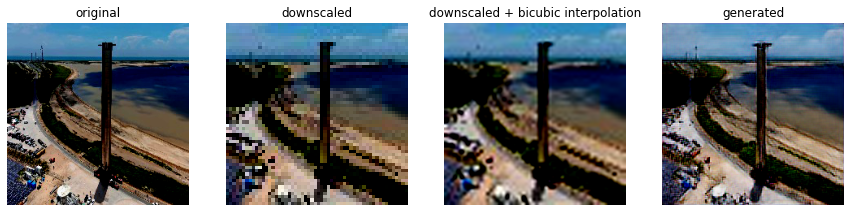
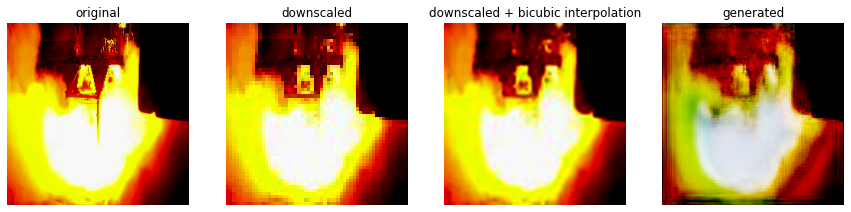
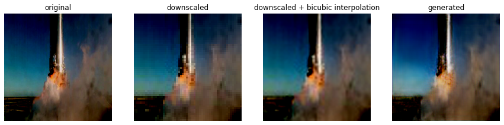

Video upscaling (super-resolution) using neural networks
In this blogpost, I will present my implementation of neural network that can upscale resolution for video given on input based on Generative adversarial network (GAN) architecture.
The first step was a realisation, that this problem could be reduced to upscaling single frame-by-frame images from the video and then connecting them at the end.
The process of upscaling images is generally called Single Image Super-Resolution (SISR), which is nowadays a wide topic that a lot of researchers are interested in
and has a broad range of applications. There are some traditional techniques (Bicubic interpolation),
that solve this problem, but the results are often blurry and can be enhanced by the use of machine learning techniques.
Generative adversarial network
GAN architecture consists of two networks, that are in contest with each other. The generative network generates candidates while the discriminative network evaluates them. The goal for generator is to learn to generate such a good quality candidates, that discriminator (that is trained on original data) is fooled by them and classifies them as originals. Here is a paper, that first proposed this architecture and describes it in detail.
SRGAN architecture
Uppon researching SISR with GANs, I was inspired by so called SRGAN architecture - Super Resolution Generative adversarial network, which is described in this paper. For the implementation I used python with Keras.

Generator model
The generator consists mainly from 16 residual blocks, which are made from following:
- Convolutional layer
- Batch normalisation
- Parametric RELU activation function
- Convolutional layer
- Batch normalisation
All convolutional layers use small kernel of size 3x3 and 64 feature maps. After the residual blocks, there are two upsampling blocks:
- Convolutional layer
- Upsampling layer
- Leaky RELU activation function
After these blocks, the generator ends with convolutional layer and final activation - hyberbolic tangens. Here is the model in Keras:
def upsampling_block(model, kernal_size, filters, strides):
model = Conv2D(filters = filters, kernel_size = kernal_size, strides = strides, padding = "same")(model)
model = UpSampling2D(size = 2)(model)
model = LeakyReLU(alpha = 0.2)(model)
return model
def residual_block(model, kernal_size, filters, strides):
gen = model
model = Conv2D(filters = filters, kernel_size = kernal_size, strides = strides, padding = "same")(model)
model = BatchNormalization(momentum = 0.5)(model)
model = PReLU(shared_axes=[1,2])(model)
model = Conv2D(filters = filters, kernel_size = kernal_size, strides = strides, padding = "same")(model)
model = BatchNormalization(momentum = 0.5)(model)
return add([gen, model])
def generator(input):
model = Conv2D(filters = 64, kernel_size = (3, 3), strides = 1, padding = "same")(input)
model = PReLU(alpha_initializer='zeros', alpha_regularizer=None, alpha_constraint=None, shared_axes=[1,2])(model)
gen_model = model
# residual blocks
for index in range(16):
model = residual_block(model, (3, 3), 64, 1)
model = Conv2D(filters = 64, kernel_size = (3, 3), strides = 1, padding = "same")(model)
model = BatchNormalization(momentum = 0.5)(model)
model = add([gen_model, model])
# upsampling blocks
for index in range(2):
model = upsampling_block(model, (3, 3), 256, 1)
# output layer
model = Conv2D(filters = 3, kernel_size = (3, 3), strides = 1, padding = "same")(model)
model = Activation('tanh')(model)
m = Model(inputs = input, outputs = model)
m.compile(loss='binary_crossentropy', optimizer=Adam(learning_rate=1e-4))
return m
Discriminator model
Discriminator contains eight convolutional layers with an increasing number of 3×3 filter kernels, increasing by a factor of 2 from 64 to 512 kernels as in the VGG network. The resulting 512 feature maps are followed by two dense layers and a final sigmoid activation function.
def discriminator_block(model, filters, kernel_size, strides):
model = Conv2D(filters = filters, kernel_size = kernel_size, strides = strides, padding = "same")(model)
model = BatchNormalization(momentum = 0.7)(model)
model = LeakyReLU(alpha = 0.2)(model)
return model
def discriminator(input):
kernel_size = (3,3)
model = Conv2D(filters = 64, kernel_size = kernel_size, strides = 1, padding = "same")(input)
model = LeakyReLU(alpha = 0.2)(model)
model = discriminator_block(model, 64, kernel_size, 2)
model = discriminator_block(model, 128, kernel_size, 1)
model = discriminator_block(model, 128, kernel_size, 2)
model = discriminator_block(model, 256, kernel_size, 1)
model = discriminator_block(model, 256, kernel_size, 2)
model = discriminator_block(model, 512, kernel_size, 1)
model = discriminator_block(model, 512, kernel_size, 2)
#model = Flatten()(model)
model = Dense(1024)(model)
model = LeakyReLU(alpha = 0.2)(model)
model = Dense(1)(model)
model = Activation('sigmoid')(model)
m = Model(inputs = input, outputs = model)
m.compile(loss='mse', optimizer=Adam(learning_rate=1e-4), metrics=['accuracy'])
return m
Loss function
The loss function consists of two parts that are summed:
- Content loss - pre-trained VGG19 network is used to extract features from both original and generated images, the loss is then defined as the euclidean distance between the feature representations of a original image and the generated image.
- Adversarial loss - generative binary cross entropy loss based on the probabilities of the discriminator
from keras.applications.vgg19 import VGG19
def vgg_loss(input):
vgg = VGG19(weights="imagenet")
vgg_model = Model(inputs=vgg.input, outputs=vgg.layers[9].output)
img_features = vgg_model(input)
vgg_model = Model(input, img_features)
vgg_model.compile(loss='mse', optimizer=Adam(0.0002, 0.5), metrics=['accuracy'])
return vgg_model
Dataset
I decided to try upscaling part of this youtube video. First, I created a python script, that can split videos into jpeg images and then create dataset by downscaling them.
import os
import cv2
def mp4_to_jpegs(input, output):
cap = cv2.VideoCapture(input)
if not os.path.exists(input):
raise Exception('Path doesn\'t exist.')
for path in [output, os.path.join(output, 'original'), os.path.join(output, 'downscaled')]:
if not os.path.exists(path):
os.makedirs(path)
counter = 0
while(True):
ret, frame = cap.read()
if not ret: break
original_name = os.path.join(output, 'original', str(counter) + '.jpg')
downscaled_name = os.path.join(output, 'downscaled', str(counter) + '.jpg')
frame = cv2.resize(frame, (224, 224))
downscaled_frame = cv2.resize(frame, (56, 56))
cv2.imwrite(original_name, frame)
cv2.imwrite(downscaled_name, downscaled_frame)
counter += 1
cap.release()
cv2.destroyAllWindows()
print('Done')
The last 25 seconds of the video were used as testing data, the rest as data for training the network.
I had some problems using images with other ratio then 1:1 with VGG loss, so I just resized the pictures to be square. I used the following resolutions:
- 224x224
- 56x56
To simplify the training process, I decided to use only every 5th frame from the video. In my opinion, a lot of these images are very similar, so they don't add much value to the training.
Results
I trained the model for 160 epochs (limit of Google Collab free tier) with batch size of 16.
Uppon training the model and running generator on the downscaled images from the test dataset, the last step was to connect the output images to video again. I made a video, that compares the original image, downscaled image, downscaled image with bicubic interpolation and image generated by my trained SRGAN.
As we can see in these frames taken from the upscaled video, the results are not that bad. We can see some improvement over bi-cubic interpolation. But in one particular scene, there is small anomaly where the fire is displayed. The rest of the video doesn't contain any similar glitches.



Here is the full comparison video, after connecting the output frames together:
Conclusion
The output demonstrates that this architecture works for image or video upscaling and can offer better results than bi-cubic interpolation. I noticed some anomalies on the test dataset, which i think could be solved by using larger training dataset and with more diverse pictures - for example the DIV2K dataset or ImageNet, and also longer training, which wasn't possible with the free tier of Google Colab. When I trained the network for only about 50 epochs, the anomalies on that same scene were much worse.
Prior to this, I had zero practical experience with neural networks and deep learning frameworks, so I learned a little how to use Keras and how GANs work.